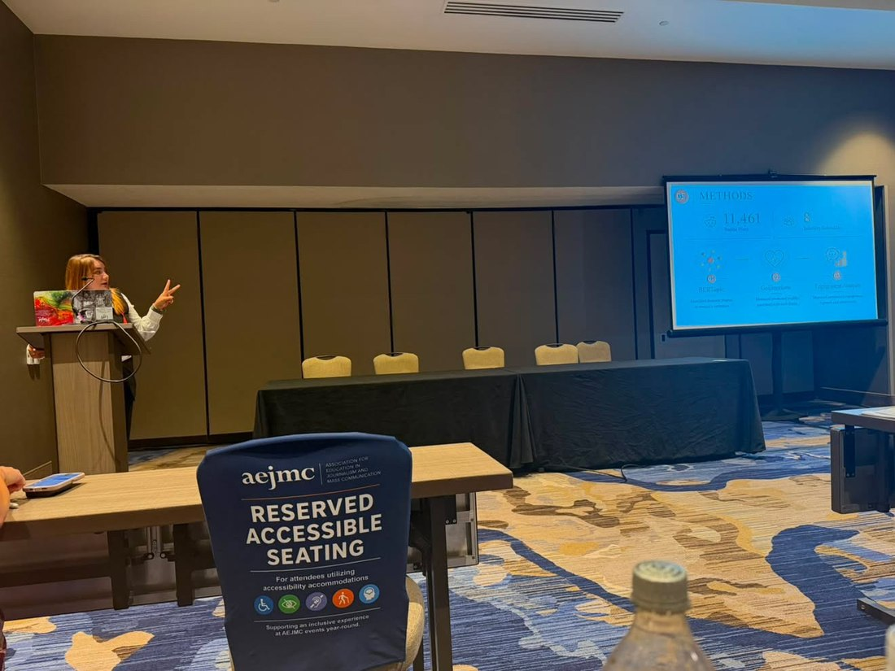

This study asks how women make sense of infertility in online communities, and what those shared narratives reveal about the expectations placed on women. Using computational analysis of 11,461 Reddit posts, it brings framing theory and feminist communication scholarship together to map how infertility is talked about at scale.
Through BERTopic modeling, the work identifies ten dominant frames spanning medical, emotional, and systemic dimensions. It finds that these communities disproportionately validate grief over a foreclosed maternal identity, while the technical and coordinative labor of navigating infertility goes largely unrecognized. The result is a portrait of digital health spaces that both offer genuine support and quietly reproduce the expectation of compulsory motherhood.
The project reflects the core of my dissertation research: using computational methods to surface how online health communities shape identity, emotion, and gendered expectation, while keeping the lived experiences behind the data at the center.
